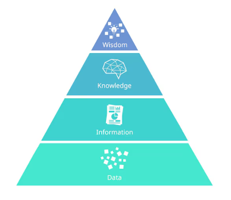

Clase 1
1 Introducción al análisis de datos reproducible
1.1 Tomar decisiones con datos
De manera consciente o inconsciente, las personas toman decisiones todo el tiempo: personales, profesionales, organizacionales. Algunas decisiones tienen bajo impacto, otras pueden tener consecuencias importantes y duraderas.
En contextos académicos, científicos, productivos u organizacionales, las decisiones no deberían basarse solo en intuición, sino en información confiable obtenida a partir de datos.
Aquí es donde entra el análisis de datos: como una herramienta para reducir la incertidumbre y mejorar la calidad de las decisiones.
1.1.1 De los datos a la sabiduría: la pirámide DIKW
Este enfoque se basa en el modelo conceptual conocido como DIKW (Data–Information–Knowledge–Wisdom), ampliamente utilizado en gestión del conocimiento y análisis de sistemas (Ackoff, 1989).
Para entender el rol del análisis de datos, utilizamos un marco conceptual clásico: la pirámide DIKW, que describe la relación entre:
Datos (Data)
Información (Information)
Conocimiento (Knowledge)
Sabiduría (Wisdom)

Datos
Los datos son hechos crudos: números, símbolos o registros sin contexto. Por sí solos no explican nada ni responden preguntas. Un listado de valores, una planilla llena de números o una base de datos sin analizar son solo datos.
Información
La información surge cuando los datos se organizan, ordenan y contextualizan. La información responde preguntas como: qué ocurrió, cuándo, dónde o cuánto.
Conocimiento
El conocimiento aparece cuando la información se interpreta, se relaciona con experiencias previas y permite comprender patrones, variabilidad y relaciones. El conocimiento responde al “cómo”.
Sabiduría
La sabiduría implica usar el conocimiento con criterio, prudencia y visión de largo plazo. Permite decidir qué acciones valen la pena. Es el nivel más alto y se construye con el tiempo y la experiencia.
Este curso se enfoca principalmente en transformar datos en información y conocimiento, sentando las bases para una mejor toma de decisiones.
1.2 El dato como materia prima
Los datos son la materia prima del análisis. Sin datos adecuados, no hay información confiable ni conocimiento útil.
Sin embargo, obtener datos no es gratis: requiere tiempo, recursos, tecnología y decisiones metodológicas. Por eso es importante aplicar el principio de parsimonia:
No recolectar más datos de los necesarios, pero sí los datos correctos.
Antes de analizar, siempre debemos preguntarnos:
¿Para qué se recolectaron estos datos?
¿Son relevantes para el problema que queremos estudiar?
¿Qué limitaciones tienen?
1.2.1 Calidad del dato: ideas clave
Para que los datos puedan transformarse en información y conocimiento, deben tener calidad. Sin entrar aún en definiciones técnicas complejas, en esta etapa nos quedamos con algunas ideas fundamentales:
Exactitud: que el dato represente correctamente la realidad.
Completitud: que no falten valores relevantes.
Consistencia: que no haya contradicciones internas.
Actualización: que el dato sea pertinente en el tiempo.
Un principio básico del análisis de datos es:
Si los datos son de mala calidad, el resultado del análisis también lo será.
1.3 Herramientas del curso: R, RStudio y paquetes
Para trabajar con datos utilizaremos el lenguaje R y el entorno RStudio.
1.3.1 ¿Qué es R?
R es un lenguaje de programación y un entorno de software diseñado para el análisis estadístico, la visualización de datos y la ciencia de datos. Permite realizar cálculos, generar gráficos y construir modelos.
1.3.2 ¿Qué es RStudio?
RStudio es un entorno de desarrollo integrado (IDE) que facilita el trabajo con R. Proporciona una interfaz organizada para escribir código, ejecutarlo, visualizar resultados y gestionar proyectos.
1.3.3 ¿Cómo es la interfaz de RStudio?
RStudio divide su pantalla en cuatro áreas principales:

Editor de código o panel Source -1-
En este panel se escriben y editan los programas o scripts de R.
Permite:
guardar el código;
modificarlo;
agregar comentarios;
ejecutar una línea o varias líneas;
reutilizar el análisis en otro momento.
Los archivos de código de R suelen guardarse con la extensión:
.R Para ejecutar una línea de código desde este panel se puede utilizar:
Ctrl + Enter Es recomendable trabajar principalmente en un script, porque permite conservar un registro ordenado del análisis realizado.
Consola -2-
La consola es el lugar donde R ejecuta las instrucciones.
El símbolo:
> indica que R está listo para recibir una orden.
Por ejemplo:
2 + 3 La consola mostrará el resultado:
[1] 5 También aparecen en este panel los resultados, mensajes, advertencias y errores. El código escrito directamente en la consola se ejecuta inmediatamente, pero no queda guardado automáticamente.
Entorno de trabajo -3-
El panel Environment muestra los objetos que se encuentran cargados en la sesión de R, por ejemplo:
bases de datos;
vectores;
tablas;
modelos estadísticos;
funciones creadas por el usuario.
También incluye otras pestañas, como History, donde se pueden consultar las instrucciones ejecutadas anteriormente.
Archivos, gráficos, paquetes y ayuda -3-
Este panel reúne varias herramientas:
Files: permite explorar carpetas y archivos.
Plots: muestra los gráficos generados.
Packages: permite consultar, cargar o instalar paquetes.
Help: presenta la ayuda y documentación de las funciones de R.
Viewer: muestra determinados contenidos, como páginas web o documentos HTML.
Síntesis
La forma habitual de trabajo consiste en:
escribir el código en el panel Source;
enviarlo a la Console para ejecutarlo;
observar los objetos creados en Environment;
consultar gráficos, archivos, paquetes o ayuda en el panel inferior derecho.
1.3.4 ¿Qué son los paquetes?
Los paquetes son extensiones que agregan funciones específicas a R. Permiten realizar tareas de forma más rápida, clara y eficiente.
Analogía con una biblioteca
R es el idioma.
RStudio es la biblioteca donde trabajamos.
Los paquetes son colecciones de libros especializados.

Instalar y cargar paquetes
Los paquetes amplían las funciones disponibles en R.
Instalar un paquete
Instalar significa descargar el paquete y guardarlo en la computadora. Generalmente, se realiza una sola vez:
install.packages("nombre_del_paquete") Por ejemplo:
install.packages("ggplot2") El nombre del paquete debe escribirse entre comillas.
Cargar un paquete
Cargar significa activar el paquete para utilizar sus funciones durante la sesión de trabajo. Debe hacerse cada vez que se inicia una nueva sesión de R:
library(nombre_del_paquete) Por ejemplo:
library(ggplot2) En este caso, el nombre del paquete se escribe habitualmente sin comillas.
En síntesis: un paquete se instala una vez y se carga cada vez que se necesita utilizarlo.
1.3.5 ¿Qué es un objeto en R?
Un objeto es cualquier elemento que almacena información en la memoria de R. Puede contener un único valor, una colección de valores, una tabla de datos o incluso una función.
En otras palabras, un objeto es el lugar donde R guarda los datos con los que trabajaremos.
Crear un objeto
La asignación se realiza mediante el operador <-.
edad <- 35 #asigno 35 al objeto edad
edad # observo que tiene edadAquí:
edades el nombre del objeto.35es el valor almacenado.
Reglas para nombrar objetos
Deben comenzar con una letra.
Pueden contener números.
Pueden contener guiones bajos (
_).No deben contener espacios.
Conviene utilizar nombres descriptivos.
Correctos:
edadIncorrectos
2edad
total emisiónPodemos visualizar su contenido escribiendo el nombre del objeto.
¿Qué tipos de objetos utilizaremos?
Para este curso trabajaremos principalmente con cinco tipos de objetos: vectores, listas, data frames, tibbles y factores.
Vectores
Un vector es una colección de elementos del mismo tipo.
paises <- c( "Argentina", "Brasil", "Chile" )
temperaturas <- c( 0.4, 0.6, 0.8 )Listas
Una lista es una colección de elementos que pueden ser de diferentes tipos.
Por ejemplo, una lista puede contener un texto, un número, un vector o incluso una tabla de datos.
estudiante <- list( nombre = "Ana", edad = 22, notas = c(8, 7, 9), regular = TRUE )En este ejemplo, el objeto estudiante contiene:
un texto:
"Ana";un número:
22;un vector de notas;
un valor lógico:
TRUE.
Para acceder a un elemento de la lista se utiliza el operador $:
estudiante$nombreestudiante$notasData Frame
Es una tabla donde
- cada fila representa una observación;
- cada columna representa una variable.
Es el objeto más utilizado en análisis de datos.
Ejemplo: Creación del dataframe *datos*
datos <- data.frame( pais = c("Argentina", "Brasil"), emision = c(120,350) )Tibble
Es la versión moderna del data frame.
Cuando usamos Tidyverse
Factores
Los factores representan variables categóricas.
continente <- factor( c( "América", "Europa", "Asia" ) )¿Cómo saber qué tipo de objeto tenemos?
class(datos)1.3.6 El entorno de trabajo (Environment)
Cada vez que se crea un objeto, éste aparece en el panel Environment de RStudio.
Por ejemplo,
pais <- "Argentina"
anio <- 2020
temperatura <- 0.561.3.7 R como calculadora y uso de scripts
R puede utilizarse como una calculadora avanzada, permitiendo realizar operaciones matemáticas, trabajar con funciones y almacenar resultados en objetos.
Por ejemplo en la consola escribir:
2+2
log(20)
sqrt(89)También es posible guardar resultados en objetos:
x <- 10
y <- 5
z<-x + y # guardo la suma en z
z #recupero el valor de la sumaEn R, el símbolo <- se utiliza para asignar valores a objetos.
Hasta aquí, las instrucciones pueden escribirse directamente en la consola. Sin embargo, trabajar únicamente en la consola tiene una limitación importante: el código no queda guardado de manera organizada.
Por esta razón, habitualmente se trabaja utilizando scripts.
Un script es un archivo de texto con extensión .R que contiene instrucciones escritas en el lenguaje R. Los scripts permiten:
Guardar el trabajo realizado
Reutilizar código Corregir errores fácilmente Compartir análisis con otras personas
Mantener un registro ordenado del análisis
Los scripts también permiten agregar comentarios para documentar el código:
# Cálculo del índice de masa corporal
peso <- 78
altura <- 1.72
imc <- peso/(altura^2)
imcEn RStudio, un script puede crearse desde:
File → New File → R Script
Las líneas de código pueden ejecutarse individualmente utilizando:
Ctrl + Enter (Windows/Linux)
Cmd + Enter (Mac)
El uso de scripts constituye el primer paso hacia un trabajo más organizado y reproducible en análisis de datos.
1.3.8 Ciencia reproducible y Quarto
A medida que los análisis de datos se vuelven más complejos, surge la necesidad de integrar el código, las explicaciones, los resultados y los gráficos en un mismo documento.
En este contexto cobra importancia el enfoque de la investigación reproducible.
Según @peng2011, la reproducibilidad implica que otras personas puedan obtener los mismos resultados a partir de los datos y el código utilizados en una investigación.
Para trabajar bajo este enfoque utilizaremos Quarto [@quarto2025], una herramienta que permite elaborar documentos reproducibles integrando:
Texto explicativo.
Código en R.
Tablas y gráficos.
Resultados de modelos y análisis.
En RStudio, un documento Quarto puede crearse desde:
File → New File → Quarto Document
Al crear el documento, se puede seleccionar el formato de salida (HTML, PDF o Word).
Los bloques de código de R pueden ejecutarse individualmente utilizando:
Ctrl + Shift + Enter (Windows/Linux): ejecuta el bloque completo.
Cmd + Shift + Enter (Mac): ejecuta el bloque completo.
Ctrl + Enter (Windows/Linux) o Cmd + Enter (Mac): ejecuta la línea actual o el código seleccionado.
Para generar el documento final, se utiliza el botón Render, que procesa el contenido del documento, ejecuta los bloques de código configurados para ello y combina sus resultados con el texto, las tablas y los gráficos.
El objetivo no es solo analizar datos, sino también documentar y comunicar el proceso de análisis de manera clara, ordenada y reproducible, favoreciendo la transparencia y facilitando la revisión de los resultados.
En esta primera clase realizaremos una aproximación inicial a Quarto. En la Parte 6 del curso profundizaremos en su utilización, aprendiendo a elaborar informes y presentaciones reproducibles para comunicar los resultados de nuestros análisis..
1.4 Cierre de la clase
En esta primera clase vimos:
Por qué los datos son centrales en la toma de decisiones.
Cómo se relacionan datos, información, conocimiento y sabiduría.
La importancia de la calidad del dato.
Las herramientas que utilizaremos durante el curso.
La filosofía de la ciencia reproducible.
En las próximas clases comenzaremos a trabajar de manera más práctica con datos reales, aprendiendo a importarlos, organizarlos y explorarlos paso a paso.